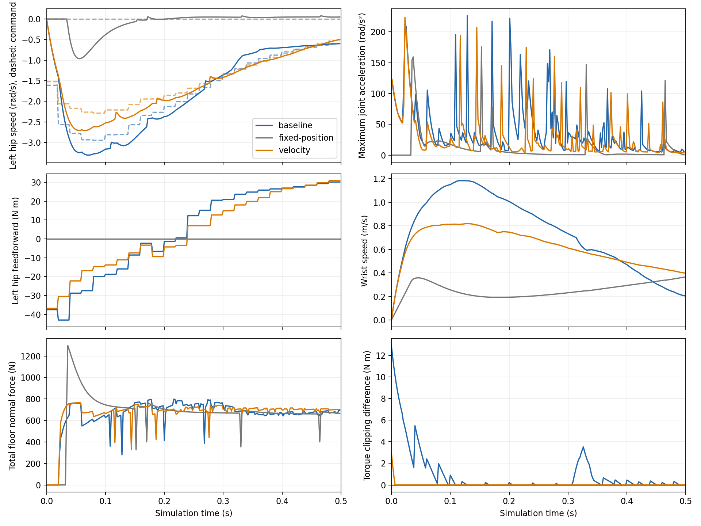

Documentation index · 16 October 2026, America/Denver
An added velocity penalty reduces h0885 wrist speed at contact from 0.700 to 0.083 m/s while retaining the brace and reach. Startup peak acceleration remains 223.6 rad/s², compared with 226.1 rad/s² originally. A fixed-position startup still produces 175.6 rad/s². The measurements support contributions from unsettled ground support and commanded motion. Left-foot displacement increases by 5.55 mm, and predicted contact forces remain infeasible. The correction remains opt-in and fails the predeclared combined criterion.
Startup covers the first 0.5 s. Joint acceleration is adjacent sampled joint-velocity difference divided by 2 ms. Wrist speed is the world translational speed of the left wrist-yaw body origin. Contact onset requires a physical witness with normal force above 1 N. Tracking RMS is command minus measured joint state, averaged over 27 joints and startup samples. Force saturation counts joint samples where the requested total servo torque exceeds the actuator force limit. Joint margin is the minimum distance to either joint bound; negative values indicate violation. Sole displacement is maximum three-dimensional movement from the initial sole centre. Loaded slip is horizontal material-point speed at a floor witness above 5 N. Reach RMS measures the reaching point's distance from the target during the final second. Solver p95 is the 95th percentile of solve time.
The initial physical pose has zero contact witnesses and zero joint velocity. It exactly equals the archived plan's initial pose. The original first command requests a 0.0322 rad position change, 1.610 rad/s velocity and up to 59.09 N m feedforward. First foot loading occurs at 22–24 ms. With fixed position, zero desired velocity and zero feedforward, foot loading starts at 34 ms and ankle acceleration later reaches 175.6 rad/s² at 153 ms. This 0.5 s comparison uses the same model and initial state.
The intervention re-solves all 200 plan nodes with an added velocity weight of 1.0, then uses that objective in the 35-node MPC. The existing approach velocity weight is 0.1. This tenfold increment tests the measured command component; hardware velocity limits were unavailable. The approach remains 120 nodes, or 2.4 s, and the braced phase remains 80 nodes. The new solve uses the original state/control trajectory as its initial guess and takes 200 iterations, 20.05 s. Both original and new plans reach their iteration limit without satisfying the convergence test.

| Measurement | Original | Velocity penalty |
|---|---|---|
| Startup joint acceleration (rad/s²) | 226.12 | 223.63 |
| Startup joint speed (rad/s) | 3.308 | 2.710 |
| Startup wrist peak (m/s) | 1.183 | 0.818 |
| Wrist speed at first wrist contact (m/s) | 0.700 at 0.314 s | 0.083 at 0.870 s |
| Position tracking RMS (rad) | 0.01877 | 0.01576 |
| Velocity tracking RMS (rad/s) | 0.2137 | 0.1842 |
| Startup force-saturated joint samples | 165 | 5 |
| Minimum joint margin (rad), full run | 0.00591 | 0.02942 |
| Left / right sole displacement (mm) | 18.80 / 29.91 | 24.35 / 29.64 |
| Left / right peak loaded slip (m/s) | 0.609 / 0.955 | 0.616 / 0.937 |
| Final-second reach RMS (mm) | 17.45 | 16.15 |
| Final-second minimum table support (N) | 196.44 | 146.32 |
| Solver p95 (ms), 20 ms period | 22.57 | 22.92 |
The acceleration reduction is 1.1%, below the declared 10% criterion. Reach passes the baseline-plus-5 mm criterion, but left sole displacement exceeds its 5 mm allowance by 0.55 mm. Those thresholds are simulation comparison criteria. Startup has no position-input clipping in either run. Force saturation reduces total requested torque by up to 12.89 versus 2.96 N m. Accounting for actuator input and force limits reproduces recorded torque within 6.4e-14 N m.
The reaching gripper contacts the table before the left wrist: at 0.300 s originally and 0.810 s with the penalty. Final support is distributed across physical bodies. The original mean loads are 199.47 N on the left shoulder-yaw body, 1.91 N on the elbow body and 2.94 N on the wrist-roll body. The intervention gives 131.10, 2.92 and 43.93 N respectively. The wrist-yaw body's final mean load is zero in both runs. The named elbow/forearm mode therefore includes uncommanded physical support.
Predicted forearm normal force reaches −12.52 versus −5.62 N; its maximum friction-cone force-row violation increases from 21.12 to 27.68 N. The added velocity cost also produces an elbow cone-row violation of 21.12 N, versus zero originally. Left/right predicted pressure-centre margins are −22.89/−14.11 mm originally and −16.99/−18.51 mm with the penalty. These margins use the predictor's world-aligned 200 × 80 mm rectangle. Predicted force/moment rows have units N/N m and world-aligned axes at the named contact origin. Raw simulated contact forces and native friction-cone checks are recorded separately; the predictor and physical sole geometry/friction differences remain those measured in the foot-motion study.
15 frames at 30 fps, 0.500 s. No approach command or feedforward.
Checkpoint status: continue. The final quota read reached 85% five-hour / 75% weekly, triggering the required stop. Measurements, videos and raw records are saved. Final source/metric and artifact consistency review remains; no further rollout is needed.
Three rollouts completed: one 0.5 s startup comparison and two 6.02 s MPC episodes, with zero rollout retries. The full 35-node horizon and 0.02 s step were checked throughout. Both MPC episodes use the existing estimated-state path with seed 17, synthetic 10 mm/0.01 rad base error and ideal joint/velocity channels. The initial states and model-array hashes agree; the original rerun reproduces earlier joint velocities exactly. Ground truth is used only for scoring. Synchronous execution omits transport delay and overruns simulated time when solving, so the latency percentile above prevents a real-time claim.
Nine guarded numerical jobs used 62.89 s, with peak RSS 3,126,812 KiB. Resguard remained at 197 events, with no new refusal or kill. An empty-contact audit was corrected before integration. Scoring completed before a missing plotting package stopped that process; the installed system plotting environment produced the figure. The audit retry and startup comparison were launched 1.2 s apart and may briefly overlap; later jobs were awaited serially, and the budget sums all elapsed times. The ten-minute quota was 76% five-hour and 74% weekly. No certified defaults, site memberships, runner, queue, limits or timer changed.
Metrics and decision · Exact commands and resources · Raw traces, re-solved plan and logs · Video verification · Experiment source
A supported handover test should measure foot loads and joint velocity before enabling the approach, then re-solve from that measured state. It would falsify the initialization explanation if acceleration remains near 224 rad/s² after ground support and servo state agree. The current experiment supports velocity regularization for slower contact arrival, but requires contact-force feasibility and foot-motion corrections before promotion. A longer-duration approach was not tested. Hardware validation needs synchronized estimated base pose, encoders, command and current/torque traces, independent sole motion and contact load at handover. Both plans have no return phase, so recovery remains untested.